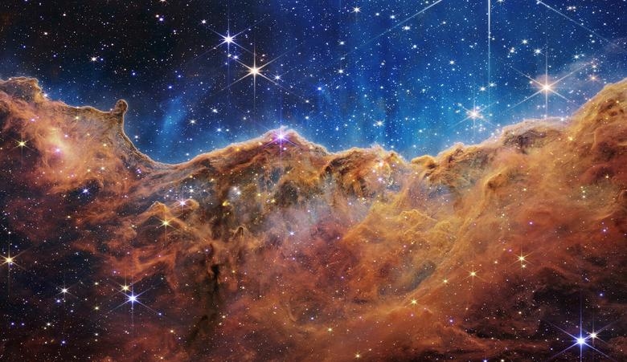

NASA unveils first images from Webb space telescope

The "Cosmic Cliffs" of the Carina Nebula are seen in an image divided
horizontally by an undulating line between a cloudscape forming a
nebula along the bottom portion and a comparatively clear upper
portion, with data from NASA's James Webb Space Telescope, a
revolutionary apparatus designed to peer through the cosmos to the
dawn of the universe. Speckled across both portions is a starfield,
showing innumerable stars of many sizes.
NASA, ESA, CSA, STScI, Webb ERO Production Team/via REUTERS
Reuters / Tuesday, July 12, 2022